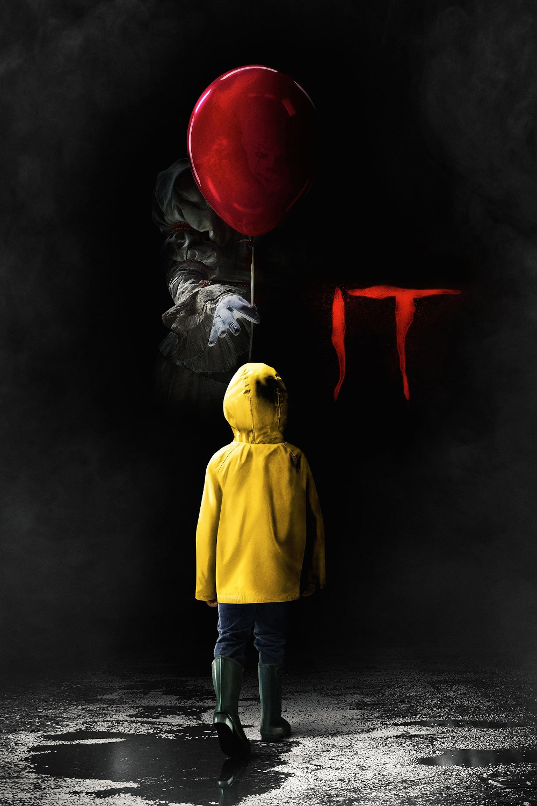

Мировая премьера: 8 сентября 2017
Слоган: А чего боишься ты?
Сюжет: В городке Дерри, штат Мэн, семеро юных друзей бросают вызов жуткому сверхъестественному существу, веками наводившему ужас на их родной городок. Оно называет себя Танцующий клоун Пеннивайз. Оно – чудовище неимоверной силы, способное принимать форму самых сокровенных людских страхов. Встретившись лицом к лицу со своими худшими кошмарами, отважные друзья могут выжить лишь в одном случае – если будут противостоять этому ужасу сообща.
Режиссёр: Энди Мускетти
В основе: Роман Стивена Кинга "Оно" (США, 1986)
Серия: Оно
В ролях:
| Джейден Либерер | Билл Денбро |
| София Лиллис | Беверли Марш |
| Финн Вулфхард | Ричи Тозиер |
| Джек Дилан Грейзер | Эдди Каспбрэк |
| Билл Скарсгард | Пеннивайз |
| Уайатт Олефф | Стэнли Урис |
| Джереми Рэй Тейлор | Бен Хэнском |
| Джексон Роберт Скотт | Джорджи Денбро |
| Николас Хэмилтон | Генри Бауэрс |
| Чоузен Джейкобс | Майк Хэнлон |
| Стивен Богерт | Элвин Марш |
| Оуэн Тиг | Патрик Хокстеттер |
Бюджет: $ 35 млн.
Кассовые сборы в США: $ 329 млн.
Кассовые сборы в мире: $ 704 млн.
Продолжительность: 2 ч. 9 мин.
Рейтинг: 7.3